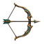
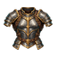

Companhia Completa
Manter 20 mercenários ativos. O prêmio permanece registrado após a entrega.
Ouro e XP da guilda · resgate concluídoREGISTROS DA GUILDA
Metas graduais, recompensas resgatáveis e descobertas permanentes da campanha.

 MARCO DA CAMPANHA
MARCO DA CAMPANHACada trilha registra progresso por campanha. Resgates acontecem uma vez, com histórico permanente.
Manter 20 mercenários ativos. O prêmio permanece registrado após a entrega.
Ouro e XP da guilda · resgate concluídoTer um mercenário de cada classe inicial.
Concluir 25 contratos de Rank A ou superior.
Concluir 10 contratos de Rank S.
Recompensa: cristal especial e XPReduzir a ameaça regional por ações da sua guilda.
Contribuir para uma rebelião regional bem-sucedida.
Ouro e influência entregues uma vezContribuir com sucesso em rebeliões de três regiões distintas.
Recompensa futura: armadura Lendária únicaDescobrir dez equipamentos Lendários distintos.
Alcançar nível 50 de guilda e concluir 50 contratos de Rank S.
Elmo Lendário único e reputaçãoLATE GAME · RECOMPENSA ÚNICA
Dez chefes de Rank S derrotados; o resgate cria uma instância única na campanha.
Espada Lendária · o bônus aleatório é gerado e salvo uma única vez pelo backend.
Equipamento Lendário único. O nome, os atributos, o nível mínimo e o dono aparecem no detalhe da instância real.
ÍNDICE VISUAL FUNCIONAL
Registros desconhecidos continuam ocultos; filtros e categorias preservam navegação por teclado.

Função de linha de frente e progressão própria.

Ataca à distância e compõe grupos.
Raro · nível mínimo 12 · refinamento +3.

Épico · nível mínimo 20.

Local, desafio e loot conhecidos.

Histórico de uma incursão concluída.
ELENCO E LEGADO
Mercenários já encontrados aparecem como registros da campanha, sem confundir raridade com Tier T1–T8.
Arqueira · nível 18 · em coleta de madeira.
Guerreiro · nível 16 · disponível.
Descubra este mercenário durante a campanha.